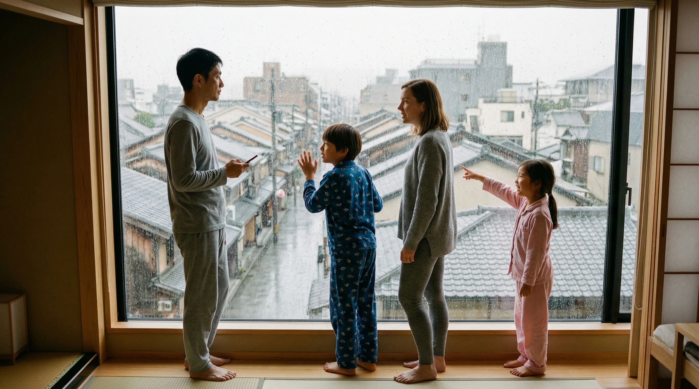
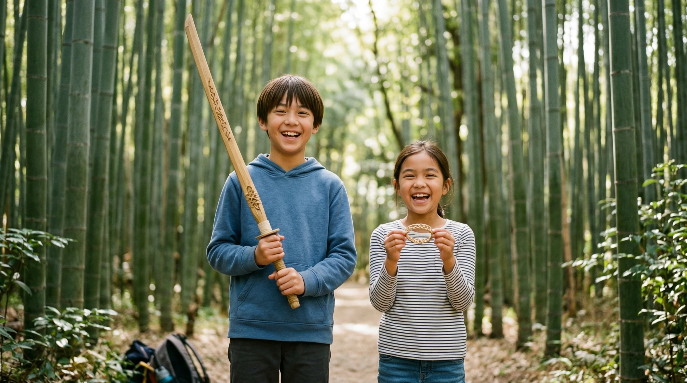
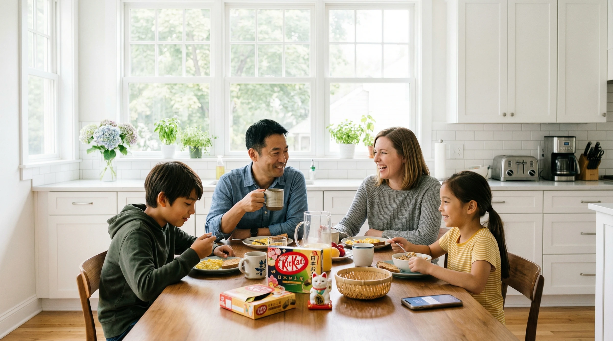

«雨だ»とTakeshiが言った。10秒後、京都の1日が再構成された——家族みんなで選び直した。
Nakamura-Andersen家。Takeshi（父・40・日本人）、Sarah（母・38・アメリカ人）、Kai（息子・12）、Mia（娘・9）。
京都への3週間の帰省。Google Docsの比較表。移動時間は計算できていない。雨のプランBはない。
P1で紹介した家族の知識基盤（Home Brain）から、旅行専用の一時的なレイヤーが子プロセスとして生まれる。アレルギー、好み、予算感覚——すべてを継承して、旅行のためだけに生きる。

帰省のたびに生まれ、学び、記憶を返して消える。
帰省中のDisclosure設定は、人間関係ごとに粒度が異なる。「知らせない × 任せる」は論理的に不可能——Disclosure ≥ Autonomyの設計制約。
プライバシー設定ではない。情報が流れる3つの方向を、人間関係ごとに制御する仕組み。
自分がAIに何を教えるか
Sarahは食事制限をAIに共有する。でも家計の詳細は共有しない。ドメインごとに粒度が異なる。
AIが家族間の興味をつなげる
Kaiが嵐山の竹林に興味を持った。AIが祖父母に「お孫さん、竹細工に夢中でしたよ」と伝える——Kaiの許可範囲内で。
AIが外部に何を共有するか
アメリカのGrandparentsには英語でベスト写真だけ。京都の祖父母には全写真。同じ旅行でも、相手によって共有の形が変わる。
Disclosure ≥ Autonomy — 知らせない × 任せるは不可能
AIにアレルギー情報を教えていなければ、レストランの自動予約は任せられない。Disclosureが低いドメインでは、Autonomy Dialも上がらない。これは設計上の制約であり、信頼構築の出発点。
Takeshi: 「日本旅行を計画して。2週間。家族4人。予算$6,000。京都と大阪。」
この瞬間、Home Brainから情報を継承してダッシュボードが生まれる。AIは1つの正解ではなく、4つの方向性を提示する。
UIは旅行のために生まれ、旅行が終われば消える。アプリのインストールではなく、Disposable Surfaceの生成——ダイナミックレイアウトが目的に応じて出現し、消滅する。
Kaiのスマホに料金は表示されない。ワクワクだけ。Miaには Home Brainから「ものづくり好き」が反映されて、工芸体験が優先表示される。
料金もロジスティクスもない。子供には「ワクワク」だけが届く。
京都に着いた。
計画にない発見が、最高の思い出になる。
嵐山の竹林を散策中。路地の竹細工工房を見つけた。予定にない。でもAIが瞬時に答える——時間は余裕がある。予算も大丈夫。
Miaのものづくり好き（Home Brain）× 現在地（嵐山）× 空き時間。3つが交差した瞬間。
Kaiは竹の刀。Miaは竹のブレスレット。
夜、その日の写真が自動でアルバムになり、京都のおじいちゃんおばあちゃんとアメリカのGrandparentsに共有される——それぞれ異なる編集で。

3日目の朝。窓の外は雨。
でも、AIはもう動いている。
2日間連続の雨。屋外予定のリスケが必要。AIが屋内アクティビティを一覧化し、料金・予約・所要時間付きで提示。親がフィルタリングし、組み合わせプランを生成する。
Adaptation = 環境変化 → UIの再構成。天気が変わった。予定が使えなくなった。AIは勝手に変えない。代替案を構造化して、家族が選ぶ。
選んだアクティビティから、AIが3つの2日間プランを生成。Plan A: ゆったり。Plan C: マンガを後日に。親がSarahと相談して絞り、TVで子供に見せる。
Delegation — AIが選択肢を構造化し、家族が投票で決める。情報整理はDelegate、最終決定はOwn。
Kaiが2体験。Miaも2体験。公平性をAIが構造化した。
AIは選択肢を構造化する。決めるのは家族。
楽しかった日々。
しかし、8日目の朝——
AIは「大丈夫です」とは言わない。「医療判断は私にはできません」と正直に認める。

3週間分の記憶がHome Brainに還元された。Disposable UIは消えた。
来年、新しいTrip Brainが生まれるとき、「Kaiは午後3時に疲れる」「Miaは竹細工が好き」という学びが、最初から組み込まれている。
P1は1年かけて上がる。P2は数日単位で変動する。
予約など重要判断
日常提案は通知のみ
医療判断は人間に返す
写真整理、記憶移行
同じ家族旅行でも、誰に何を見せるかが変わる。
アプリのインストールではなく、Surfaceの生成と消滅。これが「新しいパラダイム」の意味。
Context Grammarは3つの方向でAIの振る舞いを設計する。
AIが構造化し、人間が決める
AIが限界を認め、人間に返す
環境が変わり、UIが再構成される
AIは家族の一員ではない。だが、最高の執事になれる。
旅行のたびにDisposable Layerが生まれ、学び、消える
家族の「今」をリアルタイムで読む
信頼は日単位で変動し、危機で即座に降格する
誰に何を見せるかは、関係性ごとに異なる
Takao Umehara